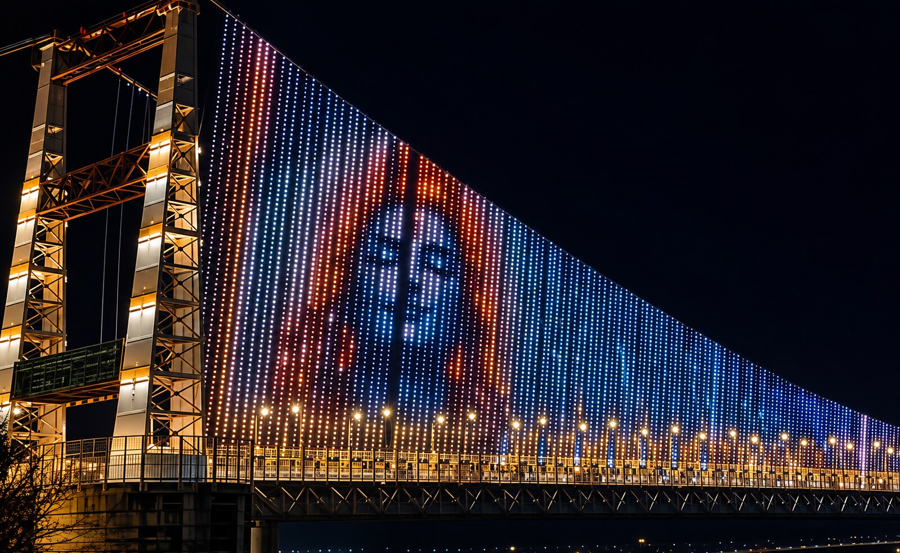
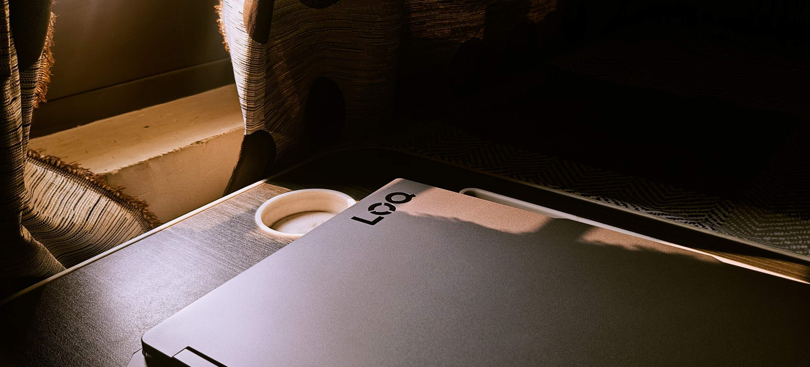
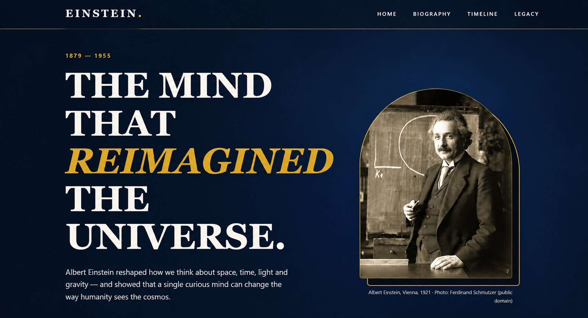
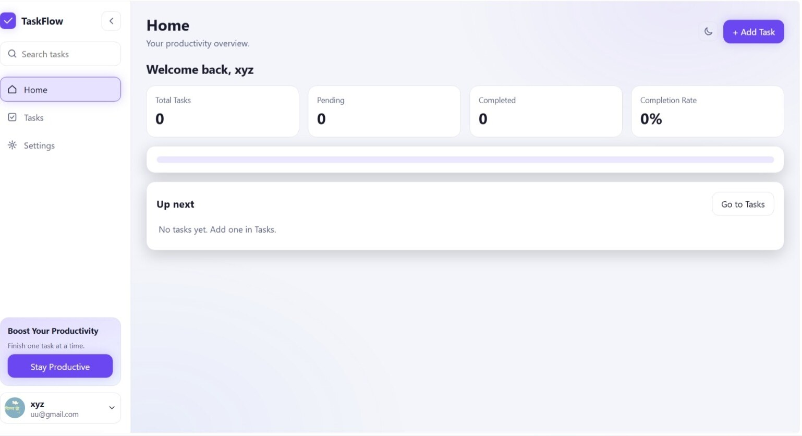
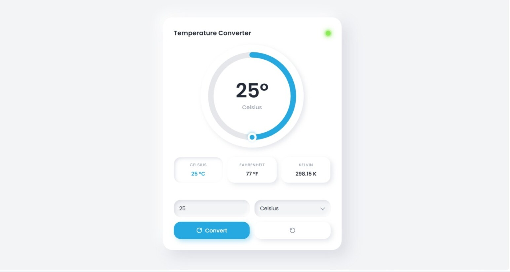

Hackathons
- BFCET Hack participation
- SIH internal hackathon participation
- Top-10 result (rank 8)
B.Tech CSE student, curious about building useful products, solving real problems and growing in Python. I learn by building, participating in hackathons and exploring creative interests beyond code.


About
I’m a B.Tech CSE student at Baba Farid College of Engineering and Technology (graduating 2027). I enjoy working on ideas that combine problem-solving, technology and design.
Lately, I’ve been diving deeper into Python—from building applications to exploring data, automation and real-world use cases.
I believe learning happens through experimentation, collaboration and building things.
Journey
Hackathons, clubs, events and collaborations have shaped how I learn, lead and work with people.
Work
A few things I’ve built while learning, experimenting and exploring different ideas.

An editorial biography website exploring the life, ideas and legacy of Albert Einstein.

A productivity and task-management interface with an overview dashboard.

An interactive temperature conversion utility supporting Celsius, Fahrenheit and Kelvin.
Photography
Everyday moments, streets, people, light and the little details that often go unnoticed.